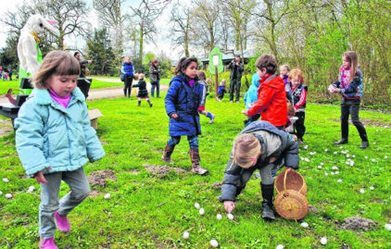

Activiteiten
Paaswandeling
Zondag 14 april houden wij een paasvergadering voor alle takken van de scouts om sapmen paaseieren te rapen!
Retrobal

Ook dit jaar organiseren wij het feesje retrobal en dat valt op 9 maart!
Onze groep telt zo'n 280 deugenieten, onderverdeeld in takken volgens leeftijd, en 35 grote speelvogels, de leiding zoals dat dan heet. Deze bende wordt vakkundig in de hand gehouden door ons groepsleidingsteam. Contactgegevens van de groepsleiding vind je terug onder het tabblad "contact".
Naar aloude traditie is er elke zondag een vergadering (=scoutsactiviteit). Allerlei spannende, boeiende en fantasieprikkelende activiteiten worden georganiseerd, natuurlijk aangepast aan de leeftijd van de tak. Vanzelfsprekend is het ons hoofddoel om elke zondag opnieuw onze sloebers een onvergetelijke voormiddag te bezorgen, maar daarnaast vinden we het toch wel belangrijk om hen spelenderwijs een en ander mee te geven.
Spelen en (op kamp) leven in groep is niet alleen heel leuk, het vergt ook aandacht voor aspecten als leren delen, gelijke taakverdeling, zelfontplooiing in groepsverband en verdraagzaamheid - zodat niemand uitgesloten of gepest wordt.
Zondag 14 april houden wij een paasvergadering voor alle takken van de scouts om sapmen paaseieren te rapen!
Ook dit jaar organiseren wij het feesje retrobal en dat valt op 9 maart!